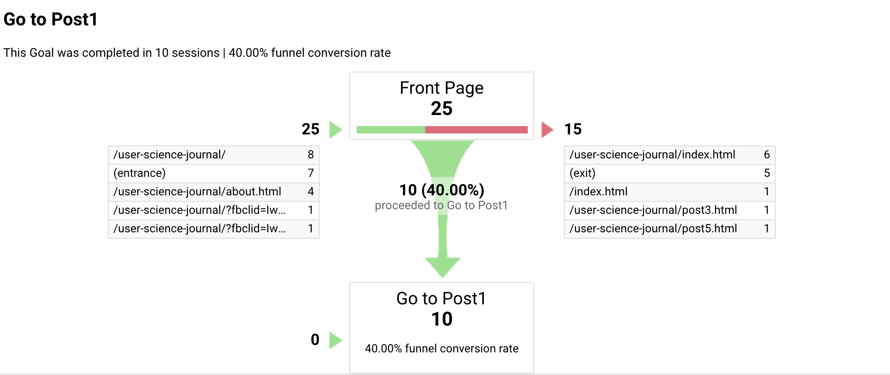

Introduction
In the last few posts, I talked a bit about working with Google Analytics. Google Analytics has a lot of functionality available to users and provides a lot of opportunities to create data based on user visits to the site. After a few basic experiments with the website, I thought it a good opportunity to try something more complicated.
Results of Goal Testing
The original goal I created was to see how much traffic was directed to post1.html. After a week or two of running, the first goal had a been completed 25 times. There were only a few more completions since the previous writing, but a lot of that can be attributed to the fact that nobody really visits the website unless I ask people to do so.
 This might suggest that the funnel is useful. Maybe.One thing that was worth looking at was the funnel conversion rate. Here, of the 25 sessions visiting the front page (index.html) directly, 10 of them went to post1.html next. It's hard to draw too many conclusions from this, but it suggests that the "featured page" content seems to drive people to go to the page in question.
Creating an Experiment
When I first implemented an Analytics goal, I actually made substantive changes to the website in order to see if I could drive traffic to a specific page. Specifically, I created a rather substantive and graphical "featured page" piece that was meant to push people to a specific page. However, I did this without thinking about it; I just went with something obvious. Having had that display up for a bit, it occurred to me that I didn't really spend much time thinking about whether that code would matter, or, if the funnel I set up was properly tracking what I hoped it would be tracking. This seemed like meaningful setup for a Google Analytics Experiment.
For this test, my basic hypothesis was that having the "featured page" content pushed more users to go to the specific post, post1.html. In the alternative, it did not matter. The hypothesis may seem somewhat obvious; that does not concern me too much. I also believe it will be valuable to have some sense of how big a difference the "featured page" content actually makes.
In order to test the above hypothesis, I created a duplicate copy of the front page that did not have the "featured page" content on it. Within the Google Analytics site, I created the experiment in which every visitor to the website would be directed to one of two pages: the original index.html that contained the "featured page" content, and the alternative index.html that did not.
Results
Unfortunately, it takes time to generate test data. This will be updated once data has been made available.
Conclusions
The biggest discovery was the sort of things that Google Analytics lets a webmaster do without a lot of work. Setting up the test is straightforward. Although it remains to be seen how effective the actual test is, it opens up a lot of possibilities for website testing. In the alternative, it does feel a bit discomforting as well; the idea that Google has positioned itself to be a fundamental backbone of the web seems concerning. Although I have no doubt there are other analytics packages available, I feel like most people are probably relying on Google.